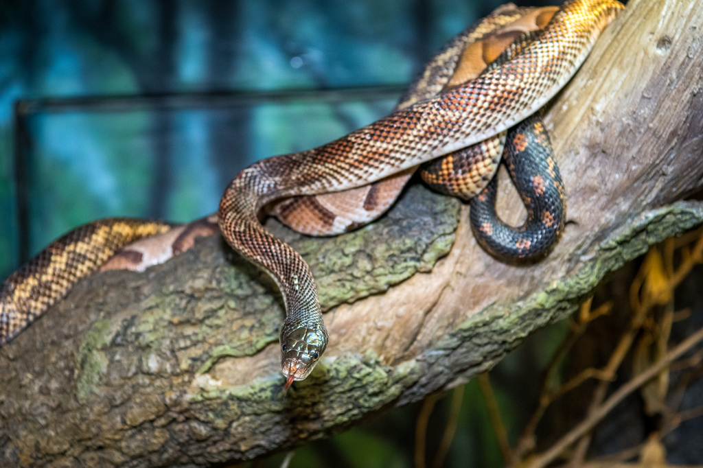
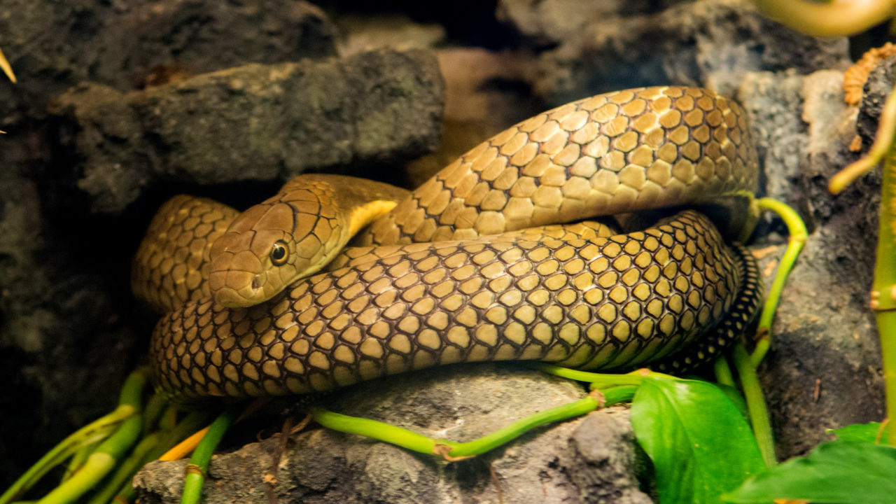

Snakes are elongated, limbless, carnivorous reptiles of the suborder Serpentes. Like all other squamates, snakes are ectothermic, amniote vertebrates covered in overlapping scales. There are over 3,000 species of snakes. You can find them in most places on earth, except Antarctica, Iceland, Ireland, Greenland and New Zealand. They are not all venomous, though. Most are harmless. Only around 600 species are venomous and, far fewer can hurt humans. Snakes, like other reptiles, are cold-blooded. This means that their body temperature changes according to their environment, unlike warm-blooded animals, like us. Our temperature remains constant regardless of the weather outside. To survive, snakes living in colder climates hibernate in winter and come out in summer when they can use the suns heat to keep warm. Have you ever seen something snake-like on the ground only to discover it is just a skin? Unlike most animals, a snake’s skin doesn’t grow along with them. Therefore, to grow, they shed their skin and produce more. A process that also helps to keep them healthy. It is really very impressive. The number of times they shed varies with species, though they will usually shed a couple of times a year. Faster growing species and young snakes shed more than others.
  Back to Home